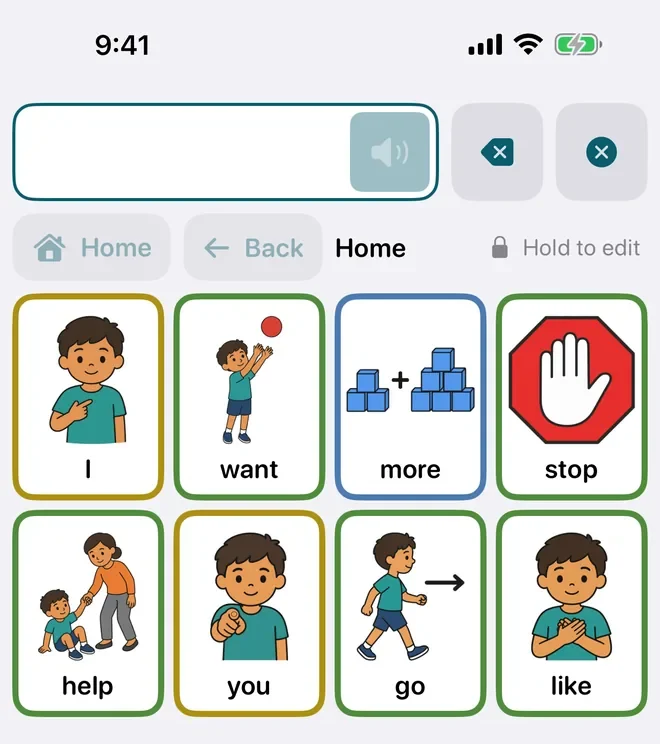
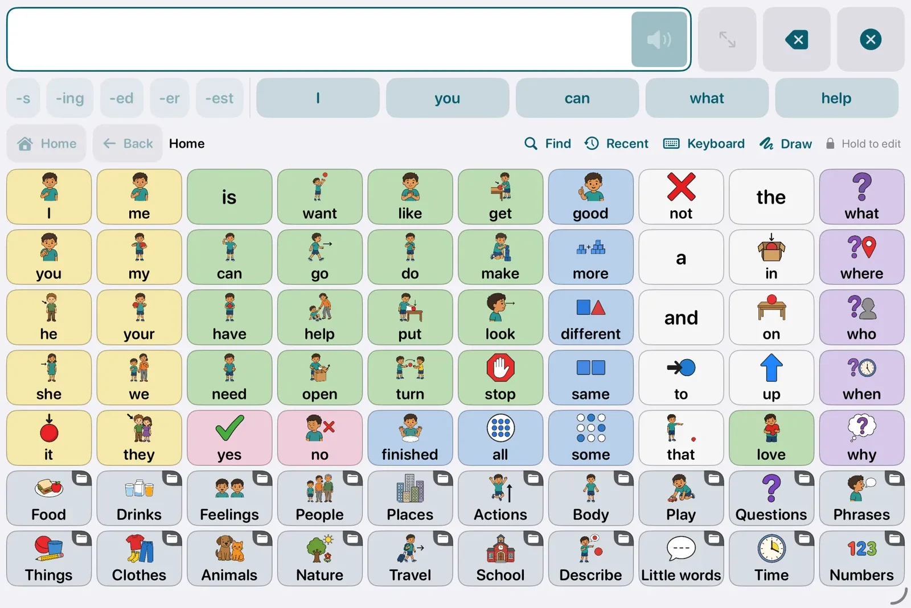
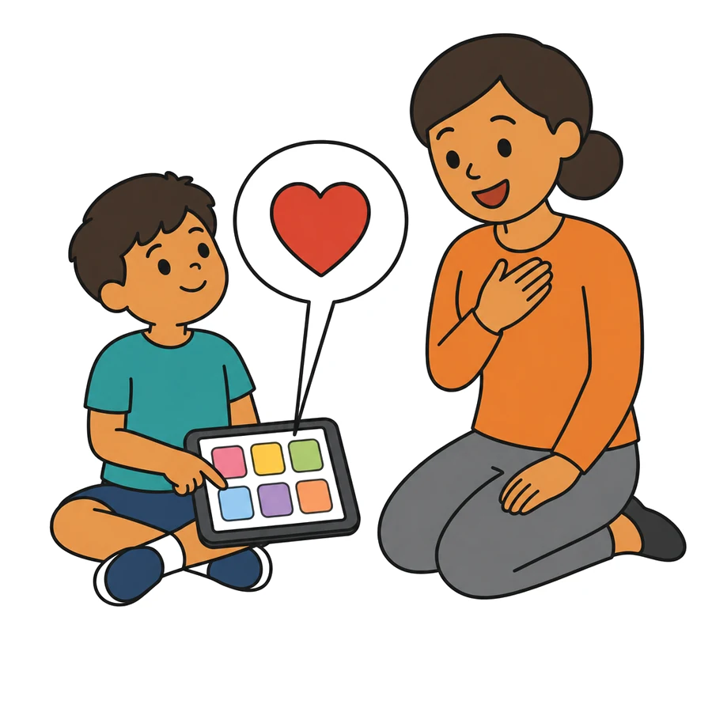
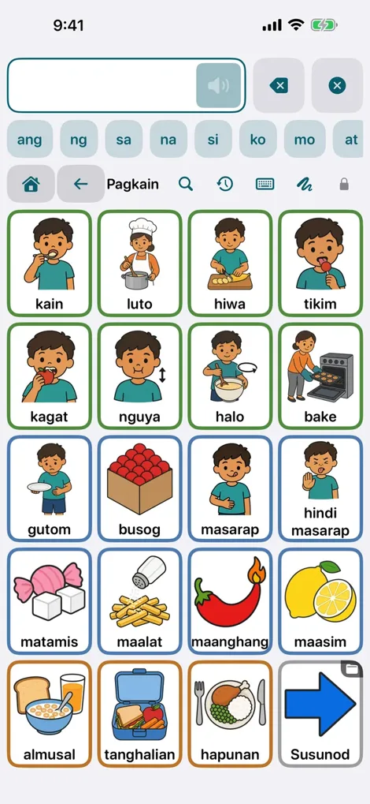
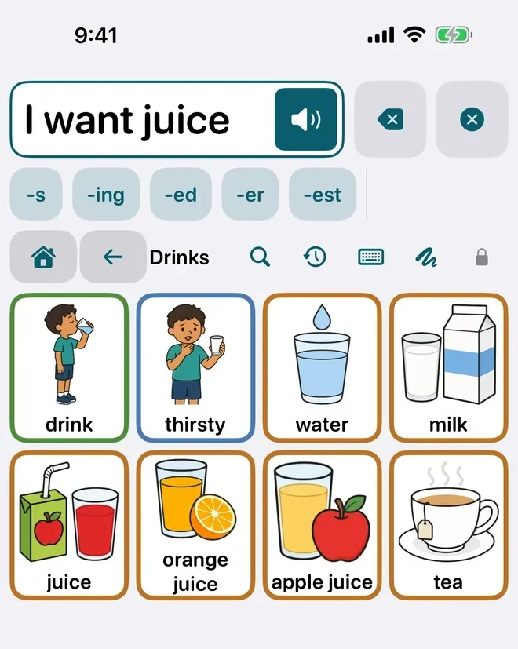
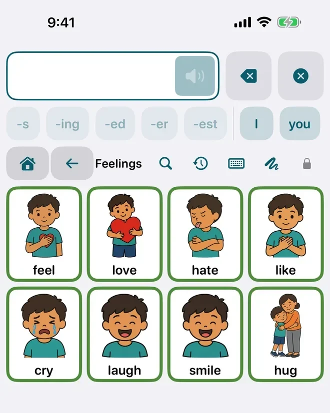
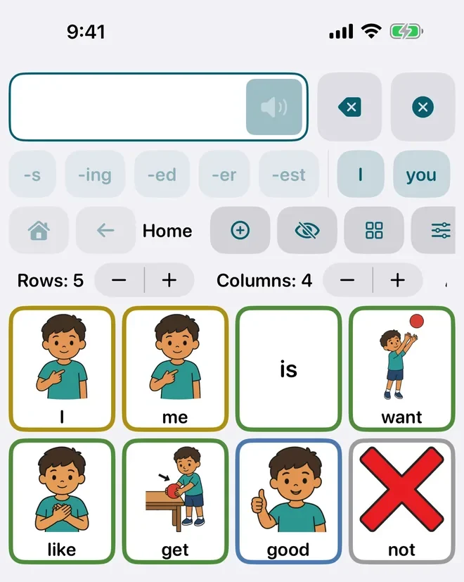
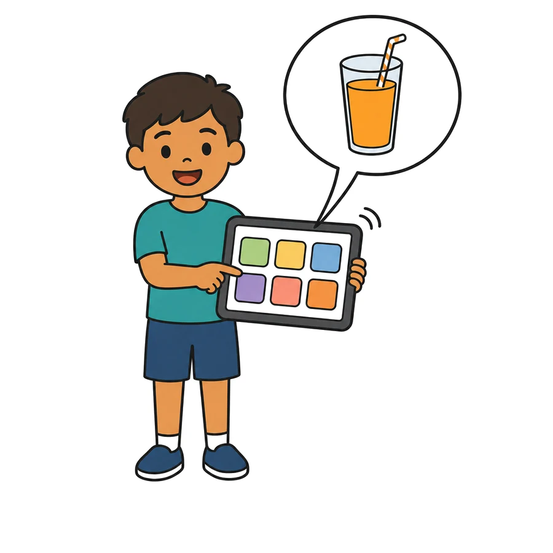

Hides every button but Home, Back and words
Little-hands mode, for very young children. On iPhone, a bigger-buttons choice puts 12 on a page, about 2 cm each.

For children and adults who can't rely on speech. Tap pictures to build a sentence and the app says it out loud, in English or Tagalog. US$19.99 once.
The pictures and the voice, Teddy, are the app's own. Tap words to build a sentence, then tap the message bar to hear it.
Core words like I, want, more and stop stay on the home board, and folders hold the rest. A keyboard with word completion covers anything missing, and Find shows the route to any word.

1,900
words, each with a picture drawn for this app
51
boards, opened from folders on the home board
3
starting sizes: 20, 42 or 70 words
5
word endings in English: -s, -ing, -ed, -er, -est
Most parents ask whether a talking app will stop their child from speaking. The people who study this say no.
“AAC does NOT prevent or reduce verbal speech.”
“There is no ‘too young’ of an age for AAC.”
Both are about AAC in general. The app is a communication tool and doesn't replace a speech-language pathologist. If you can see one, ask them to help you set it up.

Six English voices, including child voices, read the built-in words, and Ate Jen reads them in Tagalog. Every voice on the device works too, including Personal Voice, and you can record your own on any button. Photo scenes put see-through buttons over a real photo of a room, a meal or a toy shelf.
Switch to Tagalog and the words and voice change together, with every button in place. Little words (ang, ng, sa, na, si, ko, mo) replace the endings, and words families say in English, like juice, stay English.

Little-hands mode, for very young children. On iPhone, a bigger-buttons choice puts 12 on a page, about 2 cm each.

Automatic or step scanning. Set a hold time before a tap counts, and a pause after each tap.
Colour as a fill, a border or off. A dark high-contrast theme is one switch, and motion stops with Reduce Motion.
No subscription, no in-app purchases, no account and no ads. Every copy:
US$19.99once
₱999 in the Philippines. Needs iOS 17 or later.
Speech-language pathologists, special education teachers and parent groups
Freewith a code
Try it with the people you work with and tell Wince what's missing.
Email for a free codeNot everyone can get an appointment. These are what AAC specialists tell families first.
Say “more juice” and tap it too. It's called modelling, and it's how people learn where words are. Read about modelling

Tapping one button over and over is how people explore. Keep the device close and the sound on. Read why it helps

Pick a starting size, hide words for later and unhide them as they're ready. A word that stays put gets faster to find.

The ones families and therapists ask most.
Still stuck? Email delafuentewince@gmail.com. Say which device you have and what you were doing, and attach a screenshot if you can. Answered within two working days.

iPad and iPhone with iOS 17 or later. One purchase covers both. A dedicated device works best, so games don't compete with it, but a shared one is fine to start.
Press and hold the lock at the right of the toolbar for two seconds. In edit mode you can change the rows and columns, tap a button to change its word, picture or colour, and add new words.
In edit mode, lower the rows and columns at the top of the board. Words that no longer fit move to a Next page button. Nothing is deleted. On iPhone, Settings > Change vocabulary size also has a Bigger buttons switch.
Not when you hide words or switch language: every button stays exactly where it was. Resizing the grid keeps the words in the same reading order, but they shift to fit the new rows and columns. Changing the starting size (20, 42 or 70) replaces the boards with a different layout, so do that before you customise.
In edit mode, tap a button. You can choose a picture from the built-in set, take a photo, pick one from your photos, or record your own voice for that button.
Open Settings and choose Tagalog under “Language of the words”. The starter words and the voice change, and every button stays in the same place. Words you added yourself stay as you typed them.
Yes. Settings has an edit lock with an optional passcode. Write the passcode down: if it's forgotten, the only way back in is to delete the app.
The app keeps automatic backups on the device. Settings can also export a backup file (.obz). Send that file to another device and import it in Settings there.
It keeps working, because it needs no server and no account. Your boards export in Open Board Format, an open standard that other AAC apps can import, so you can take them with you.
Settings has custom pronunciations, and you can change the voice, speed and pitch.
Purchases go through Apple, and Apple handles refunds at reportaproblem.apple.com.